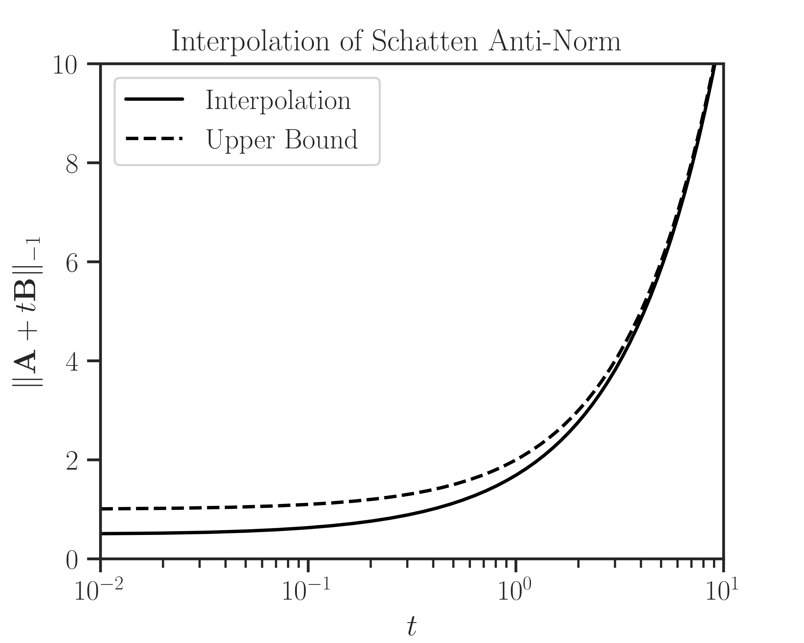

imate.InterpolateLogdet.upper_bound#
- InterpolateLogdet.upper_bound(t)#
Upper bound of the interpolation function.
Note
This function only applies to \(p=-1\).
- Parameters:
- tfloat or numpy.array
An inquiry point or an array of inquiry points.
- Returns:
- ubfloat or numpy.array
Upper bound. If t is an array, the output is also an array of the size of t.
- Raises:
- ValueError
If \(p \neq -1\).
See also
Notes
A upper bound of the function \(\Vert \mathbf{A} + t \mathbf{B} \Vert_{-1}\) is (see [1])
\[\Vert \mathbf{A} + t \mathbf{B} \Vert_{-1} \leq \frac{\mathrm{trace}(\mathbf{A}) + t \mathrm{trace}(\mathbf{B})}{n}.\]Note that the above bound is not sharp as \(t \to 0\).
References
[1]Ameli, S., and Shadden. S. C. (2022). Interpolating Log-Determinant and Trace of the Powers of Matrix \(\mathbf{A} + t \mathbf{B}\). arXiv: 2009.07385 [math.NA].
Examples
Create an interpolator object \(f\) using four interpolant points \(t_i\):
>>> # Generate sample matrices (symmetric positive-definite) >>> from imate.sample_matrices import correlation_matrix >>> A = correlation_matrix(size=20, scale=1e-1) >>> B = correlation_matrix(size=20, scale=2e-2) >>> # Initialize interpolator object >>> from imate import InterpolateSchatten >>> ti = [1e-2, 1e-1, 1, 1e1] >>> f = InterpolateSchatten(A, B, p=-1, ti=ti)
Create an array t and evaluate upper bound on t. Also, interpolate the function \(f\) on the array t.
>>> # Interpolate at an array of points >>> import numpy >>> t = numpy.logspace(-2, 1, 1000) >>> ub = f.upper_bound(t) >>> interp = f.interpolate(t)
Plot the results:
>>> import matplotlib.pyplot as plt >>> import seaborn as sns >>> # Plot settings (optional) >>> sns.set(font_scale=1.15) >>> sns.set_style("white") >>> sns.set_style("ticks") >>> plt.semilogx(t, interp, color='black', label='Interpolation') >>> plt.semilogx(t, ub, '--', color='black', label='Upper bound') >>> plt.xlim([t[0], t[-1]]) >>> plt.ylim([0, 10]) >>> plt.xlabel('$t$') >>> plt.ylabel('$\Vert \mathbf{A} + t \mathbf{B} \Vert_{-1}$') >>> plt.title('Interpolation of Schatten Anti-Norm') >>> plt.legend() >>> plt.show()
{kind=link}